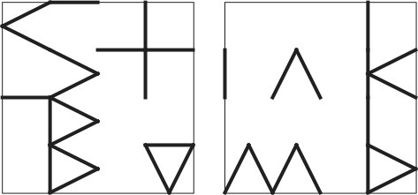

The shields mentioned in the first and last stanzas correspond to naval signal flags; these are:
| St. Patrick's cross | V |
| A roundel sable | I |
| Haiti's bands | E |
| some Bull's-eye | W |
| one blue square | S |
| the handsome Bari flag | H |
| That roundel | I |
| those bands there | E |
| or and sable quartered | L |
| one blue band (centered) | D |
| that square | S |
| a suit | F |
| the cross of Skåne | R |
| bendwise or and gules | O |
| the Scottish flag | M |
| a more pentagonal two-hued shape | A |
| one that's red and still five-sided | B |
| the bendwise one | O |
| St. Pat's | V |
| Haiti's | E |
We thus need to find out the configuration of the shields, which is a logic puzzle involving more naval signal flags. Here's one way to do the logic:
The field was strewn with squares like "the eleventh month"; the November flag is a 4x4 blue-and-white checkerboard:
The three-Knutson phalanx is arranged like stripes of "Capulet"; Juliet(t)'s stripes are stacked vertically. Also they face towards where "The Bantu"'s blue is; Zulu's blue piece is at the east. So the whole phalanx faces east. They "nose" the two blank squares and Hrossfot, who faces north and noses Hrossfax. So they are arranged like this in some column:
| ? | Hx | ||
| K> | Ht^ | ||
| K> | . | ||
| K> | . |
(The two dots mark the only squares that were originally unoccupied.)
At the start of the third stanza, the Hrossons whose line of sight is like the lines of "Hairless Brown" (Charlie, with horizontal lines) not those of the "links game" or "beastless dance" (Golf and Tango, with vertical lines), leave the field with their shields. Hrossfax is one of them, and leaves by sidling left, so he specifically is facing east. When the middle Knutson backs up, and then sidles right, he must be doing so over squares once occupied by horizontal Hrosssons; since both left the field just by backing up, they were originally facing east and in the first column. Thus, we have a starting position of:
| ? | ? | Hx> | ? |
| ? | K> | Ht^ | ? |
| H> | K> | . | ? |
| H> | K> | . | ? |
After the 4 horizontal Hrosssons vanish, the ratio of Knutsons to Hrossons is what weight (Kilo), northerner (Yankee) and kit (Uniform) show colorwise: 1:1. Thus, since there were originally 14 Vikings, there were 5 Knutsons and 5 vertical Hrosssons. Also, after the middle Knutson backs up, all the Knutsons are on squares of one color (which must be blue) and all the (vertical) Hrosssons are on squares of one color (which must then be white); this gives us the original positions of all the vertical Hrosssons:
| ? | H| | Hx> | H| |
| H| | K> | Ht^ | ? |
| H> | K> | . | H| |
| H> | K> | . | ? |
While Hrossfot is in the air, the position is (where the ?s are 2 Knutsons and an empty square where a Hrossson was):
| ? | H| | . | H| |
| H| | K> | . | ? |
| . | . | . | H| |
| K> | K> | . | ? |
X-ray ("light from tubes") has 4 squares. The only Hrossson who can move 4 squares on a path that turns right once and never left is the one at the top of the second column, so he faces north like Hrossfot, and all other vertical Hrosssons face south. The Knutson that is freed is thus the one at the top of the first column, faced north after turning, and thus faced west at the start. For this Knutson to move 4 squares with two bends, he must go into the second square of the fourth column, which must have been vacated by the remaining horizontal Hrossson, who backed up to exit and thus was facing west. The southeast corner thus contains the fifth Knutson. So these are the original position, and the position after Hrossfot lands:
| K< | H^ | Hx> | Hv |
| Hv | K> | Ht^ | H< |
| H> | K> | . | Hv |
| H> | K> | . | K |
| . | . | . | Hv |
| Hv | K> | Ht^ | K^ |
| . | . | . | Hv |
| K> | K> | H^ | K |
Since no other Knutson is facing the edge of the field after Hrossfot lands, the Knutson who faces the edge both before and after everyone turns must be the one in the southeast corner, and he must have started out facing south and ended up facing east. The complete positions at the start and just before everyone flees are thus:
| K< | H^ | Hx> | Hv |
| Hv | K> | Ht^ | H< |
| H> | K> | . | Hv |
| H> | K> | . | Kv |
| . | . | . | H< |
| H< | K^ | Ht> | K< |
| . | . | . | H< |
| K^ | K^ | H> | K> |
The Hrosssons have one shield out in front of them, and the Knutsons have two shields held like a menu, as shown in the illustration at the top. The shields, as seen from above at the start and end (as per the boxes at the bottom) are:

which spells out the answer, STINK BOMB.